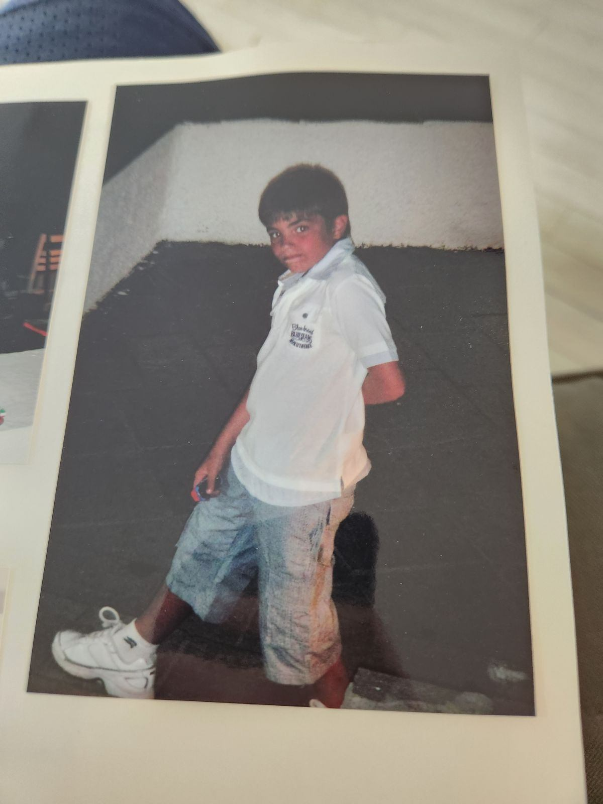

I am called Vasileios Tselios. I was born in Drama, Greece on the 24th of February 2004 to a military doctor and a cartographer. Due to my dad’s duties to the Greek military, we would constantly move around, only staying 2 years in a city at most. These circumstances gave me the privilege of being very well travelled at a young age and taught me to become social and extroverted, as I would make new friends every two years or so. Through a life of constant turnover and change, my love for sports was the one constant that remained. My first ever spoken word was “ball” and my first love was soccer. It still remains as my favourite sport although that love slowly expanded into basketball and motorsport while I was living in Greece. In 2014, my family moved to Canada, marking the biggest change so far in my life. I had changed houses, friends and cities before, but this time I also changed lifestyles, languages and continents. It came as a huge culture shock to my 10 year old self, but I very easily adapted to my new country. I seemed to have an affinity for the English language, that helped me pick it up very easily, and the western culture really intrigued me. I not only became fascinated by the 4 big western sports of baseball, football, basketball and hockey, but also by the music, television and art of the culture. What started as a love for sports developed into a natural curiosity for the culture and the world around me. I started to gravitate more towards the arts and languages in my academics and the multicultural nature of Canada started appealing to that natural curiosity. I would learn about the ethnic backgrounds of my asian, african, european, latin and middle eastern classmates in high school. The decision to enrol in a Journalism program was seamless for me and I chose Ottawa, as I wanted to explore a different city other than Toronto, where I had lived previously. Ottawa was the perfect destination as I encountered a lot of cultures and arts that peaked my interest. This is encapsulated by my lovely partner who is a queer first nations francophone and has an upbringing wildly different from mine. They are currently one of my biggest inspirations for exploring all the different aspects of the world through the profession of journalism.
